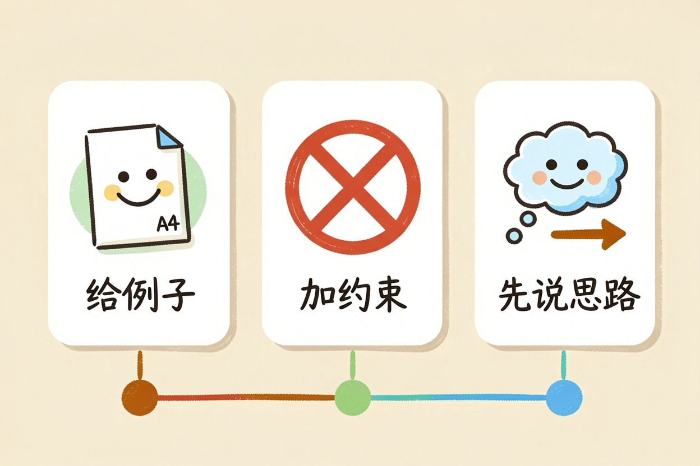
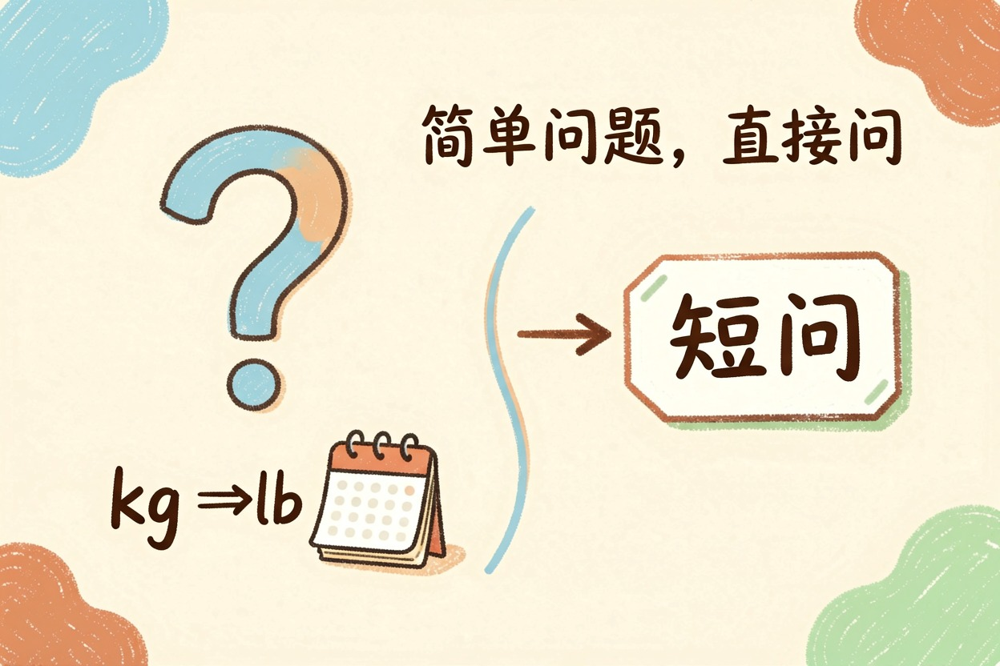

AI 提示词怎么写？四段结构和万能模板
缺角色它按大众口径答，缺背景它猜你的处境，缺格式它给你没法用的段落。
ai提示词怎么写是本文的核心主题，下面详细介绍如何使用。
把「帮我写个总结」补成四段，输出质量的变化比换个模型明显得多。
四段结构逐段拆：每段该写什么
角色，告诉它以什么身份回答，比如「你是带过五年团队的部门经理」。身份决定它的用词和判断标准。
任务，一句话说清要它产出什么，动词要具体，写、改、列、对比、打分，而不是「帮我看看」。
背景，给它必要的处境信息，读者是谁、用在哪、有什么限制。这一段最容易被省略，也最影响结果。
格式，指定输出形态，几段、几条、表格还是清单，多少字。这一段决定你拿到手要不要返工，写清楚能省下大量复制粘贴的时间。
对照一下就清楚了。「帮我写个季度总结」是空指令。换成「你是我的部门主管，把下面的工作记录整理成季度总结，读者是不了解细节的上级，突出结果和数据，600 字以内，分三段」，出来基本能直接用。差别不在你多打了几十个字，在于 AI 不用再猜。
一个可以直接套的万能模板
角色：你是（具体身份，含经验年限或专业领域）。
任务：请（具体动词）（具体产出物）。
背景：这份内容给（谁）看，用在（什么场合），
需要注意（限制条件，如不能出现某类表述）。
资料：（粘贴你手上的原始信息，没有就写「无」）
格式：（几段／几条／表格／字数上限）。
如果信息不足以完成任务，先向我提问，不要编造。最后那句「不要编造，先提问」很关键，能挡掉一大半凭空捏造的内容。
三个立刻见效的加成技巧
给例子。贴一段你认可的样例，说「照这个风格写」，比用十个形容词描述风格有效得多。你说「专业一点」，它可能还你一堆书面语；你贴一段样例，它照着仿。
补充：ai提示词怎么写的详细用法可参考上文步骤。
补充：ai提示词怎么写的详细用法可参考上文步骤。
补充：ai提示词怎么写的详细用法可参考上文步骤。
加约束。明确写出不要什么，比如「不要用『综上所述』」「不要出现没有出处的数字」。负面约束往往比正面要求更好使。
让它先说思路。要求「先列提纲，我确认后再写正文」。分两步走，你能在半路纠偏，避免它一口气写完两千字全跑偏。这三招不挑工具，在国内外任何一款对话 AI 上都成立。
关于ai提示词怎么写，建议结合实操理解，多看多试。
---
什么时候别写长提示词

关于 ai提示词怎么写 的常见问题

Q: ai提示词怎么写 怎么用？ A: 掌握 ai提示词怎么写 的关键在于多实践，建议先跑通基础流程再逐步深入。
Q: ai提示词怎么写 免费吗？ A: 大多数工具提供基础免费额度，具体以官网当前说明为准。
ai提示词怎么写的最佳实践见上文详细步骤，别错过核心要点。
本文信息核对于 2026-08-04。AI 产品的价格、免费额度与功能变动频繁，实际以各工具官网当前说明为准。